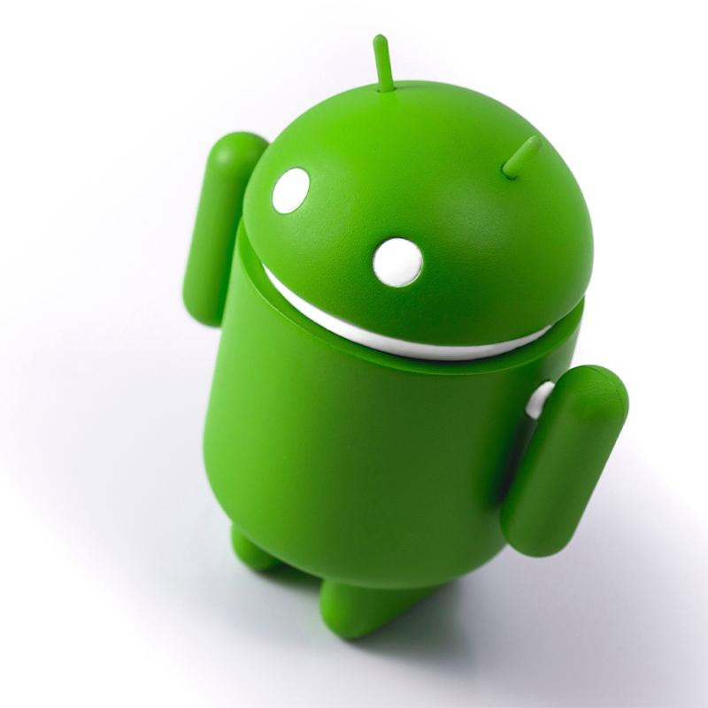
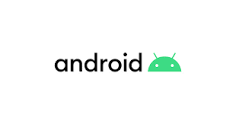

O nascimento do Android
A primeira versão oficial do Android foi lançada em 23 de setembro de 2008, mas a história deste sistema operativo iniciou-se em outubro de 2003, ano em que Rich Miner, Nick Sears, Chris White e Andy Rubin criaram, em Palo Alto, na Califórnia, a empresa Android Inc. Sim, os consumidores tiveram acesso ao Android apenas em 2008, mas o desenvolvimento da primeira versão do sistema operacional começou pelo menos cinco anos antes, em 2003. Foi nessa época que uma equipe formada por Rich Miner, Nick Sears, Chris White e Andy Rubin criaram uma companhia chamada Android Inc.
Seu nome
O nome “Android” foi escolhido pelo fato de Rubin ser um apaixonado por robôs – e também por deter a propriedade do domínio android.com, que era o seu site pessoal. O grupo imaginava transformar o então novato Android em um SO para câmeras fotográficas, mas o mercado não se mostrou muito interessado. A segunda opção foi investir em celulares.
Apesar de a ideia parecer promissora, o grupo em si não conseguiu ser bem-sucedido, mas o projeto chamou a atenção do Google. No início de 2005, a Gigante de Mountain View estava interessada em um SO para celulares e fez uma proposta: US$ 50 milhões pelo Android e sua equipe